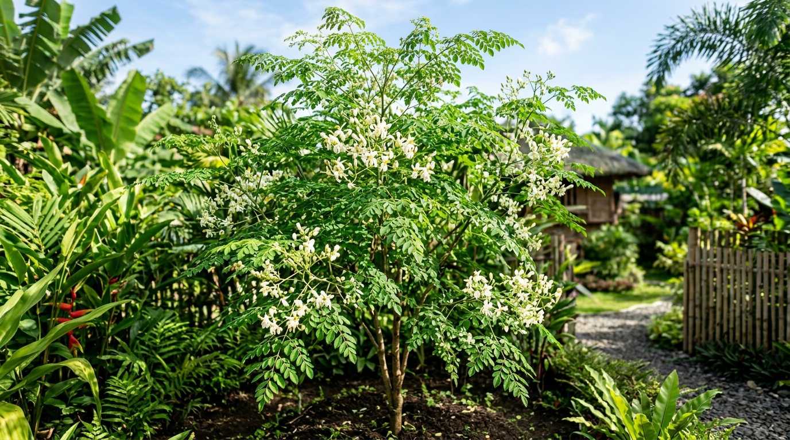
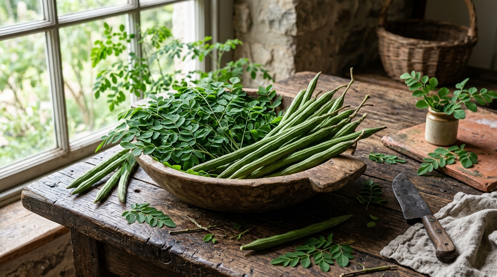

Assessing Malunggay Leaf Extract as a Viable Replacement for Conventional Cooking Oil

The Challenge with Conventional Cooking Oil
High Unhealthy Fats
Conventional cooking oils are often refined, high in saturated fats, and contain trans fats that lead to cardiovascular issues.
Rising Market Demand
Consumers are actively searching for healthier, sustainable, and organic cooking alternatives, but choices remain limited or imported.
Underutilized Superfood
Malunggay (Moringa) grows abundantly locally and is packed with dense nutrients, yet it remains largely neglected in commercial cooking oil sectors.
Traditional Barriers
Public awareness of Malunggay is restricted to home-cooked soups and traditional dishes, ignoring its versatile potential as an oil extract.
Nutrient Deficit in Refining
Standard oil refinement strips away natural antioxidants, whereas Moringa leaves are rich in active, protective compounds.

Malunggay Leaf Extract as Alternative Cooking Oil
Safe & Cost-Effective Extraction
Developed via a natural infusion process, capturing the active elements of Moringa leaves without harsh chemical solvents.
Vitamin & Mineral Powerhouse
Naturally rich in Vitamins A, C, E, Calcium, Potassium, and essential fatty acids that support a healthy immune system.
Active Health Benefits
Retains robust anti-inflammatory, antimicrobial, and antioxidant properties, improving health outcomes with daily use.
Affordable & Locally Sourced
Provides a budget-friendly, natural oil alternative tailored for household kitchens and commercial hospitality businesses.
Why Malunggay Oil Stands Out
Malunggay-infused oil bridges the gap between premium health oils and affordable everyday cooking oils.
🌱 Local Economic Impact
By shifting to indigenous Moringa oil, we strengthen domestic farming, reduce carbon footprints, and empower rural agricultural cooperatives.
Conventional Cooking Oils
-
✓
Superior Nutrient Density: Significantly lower unhealthy fat ratios while injecting vital micronutrients directly into meals.
-
✓
Oxidative Stability: Natural antioxidants present in the extract help slow down oil oxidation, extending frying shelf life.
Premium Alternatives (Olive & Coconut Oil)
-
✓
Drastically Lower Cost: Grown locally in the backyard of most households, minimizing processing and transportation overheads.
-
✓
Socio-Agricultural Support: Zero dependency on imports (unlike olive oil). Direct support to local farmers and sustainable community farming.